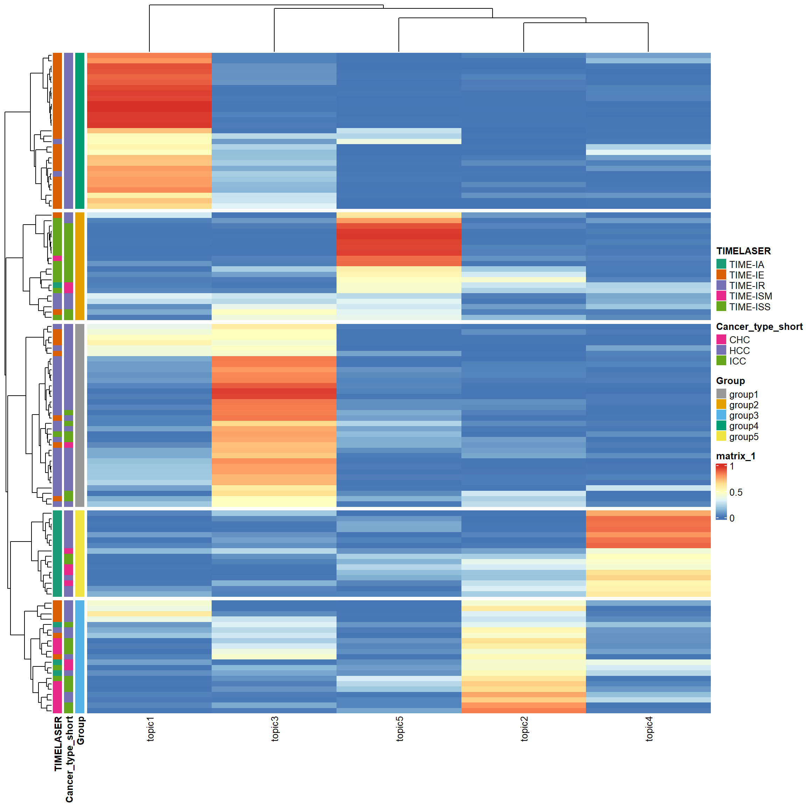
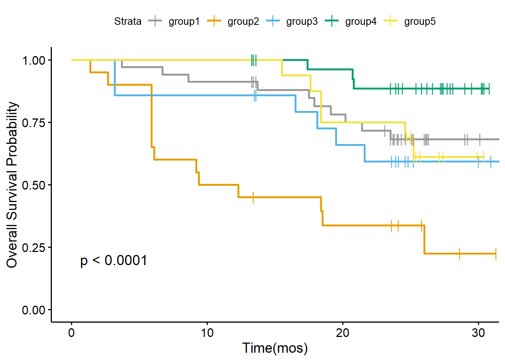
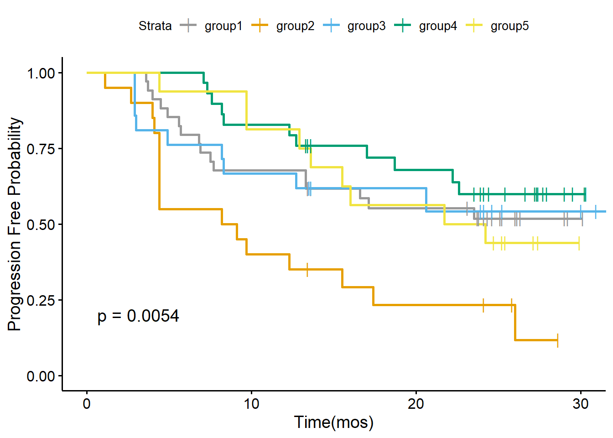
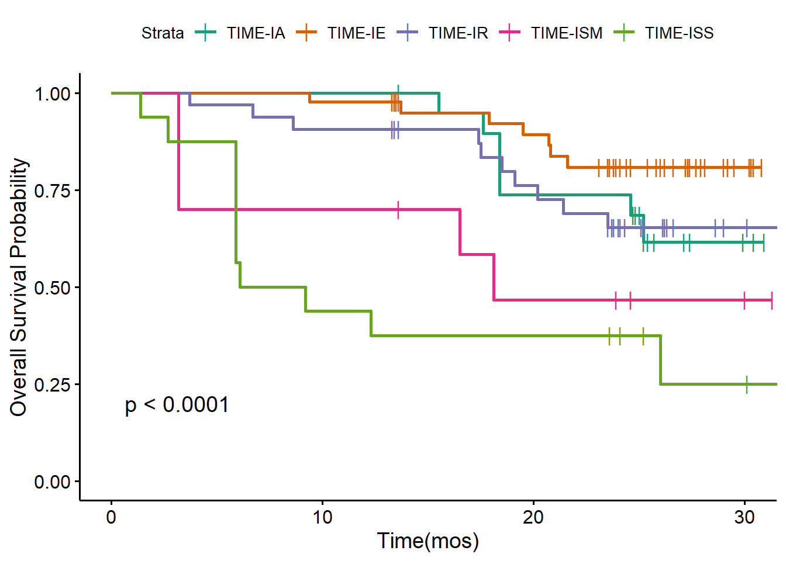
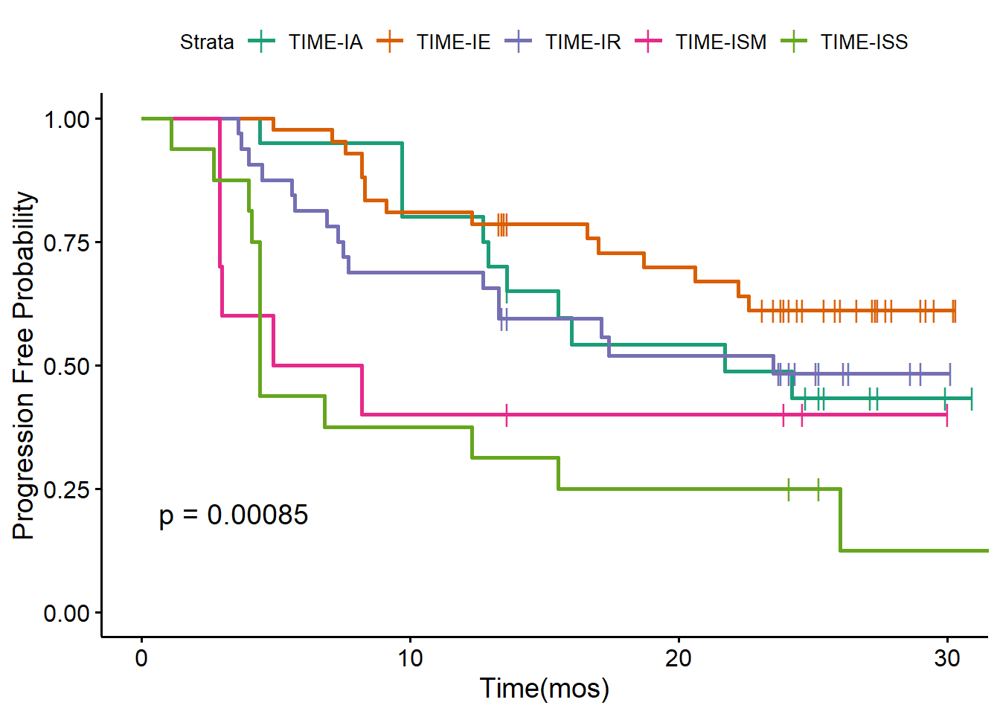

Here we walk through the pipeline of the latent Dirichlet Allocation (LDA) model, showing an example of its application on a scRNA-seq dataset from liver cancer patients. This dataset is obtained from a recent published nature paper. (https://www.nature.com/articles/s41586-022-05400-x). All data used in the analysis can be found in the supplementary data files of the original paper or in the data portal (http://zhangninglab.com:3838/scPLC/).
In text mining, LDA requires the input as a count matrix, where each row represent each document,each column represent each term, each entry in the matrix is the number of occurrences of each term (a word is a single occurrence of a term). Motivated by the similarities between text data mining and single-cell analysis, for single-cell analysis, LDA consider:
cells as words,
cell types as terms,
patient samples as document,
biological processes as topics.
Before applying the LDA model, we also need to prepare the cell type count matrix as the input of LDA. One common approach to get the cell type count matrix is to pool all cells together and do the clustering, if there is no batch effect.
In this workflow, we use the published dataset to illustrate. We just download and use the cell type count matrix from the paper. All cell types have been well-annotated in the original paper.
Firstly, we have to install core R packages required for LDA analysis. We use the R package topicmodels for model inference, R package slam for preparing the input data, R package tidytext for extracting the output data.
library(topicmodels)
library(slam)
library(tidytext)In this workflow, we use some R packages for data visualization and analysis. But these R packages are not necesseray, you can use other similar R packages instead.
library(tidyverse)
library(corrplot)
library(ComplexHeatmap)
library(ggpubr)
library(survminer)
library(survival)
library(RColorBrewer)Then we read the cell type count matrix, which was download from the data portal (http://zhangninglab.com:3838/scPLC/). We include 130 tumor tissue samples from 119 patients. Several patients have multiple tumor tissue samples.
metadata.sel.count_tumor_tissue <- read.csv("https://raw.githubusercontent.com/xiyupeng/LDA_examples/main/data/metadata-sel-count_tumor_tissue.csv",row.names = 1)
## exclude clusters that were removed in the paper due to low frequency or low quality
removed_clusters<-c("CD4T_01_CCR7", "CD4T_09_FOXP3", "CD8T_01_CCR7", "CD8T_02_CX3CR1",
"CD8T_03_GZMK_S1PR1", "gdT_01_GNLY_S1PR5", "NK_01_FCGR3A_CX3CR1",
"MonoDC", "Mo_01_CD14", "Mo_02_CD16", "Neu_02_S100A12", "Neu_03_ISG15", "Neu_04_TXNIP")
data_matrix<- metadata.sel.count_tumor_tissue %>% dplyr::select(!removed_clusters)The final input data for LDA has 130 samples with 76 features (clusters)
dim(data_matrix)## [1] 130 76count_matrix_triplet <- as.simple_triplet_matrix(as.matrix(data_matrix))
lda<-LDA(count_matrix_triplet, control = list(seed = 2021, burnin = 1000,thin = 100, iter = 1000), k =5, method = "Gibbs")
save(lda, file = "~/flow_cytometry/manuscript/liver cancer data/LDA_K5_filtered.Rdata")It may take several minutes with the Gibbs Sampling. We can save the result at this moment for further analysis
# load the data
load(file = "~/flow_cytometry/manuscript/liver cancer data/LDA_K5_filtered.Rdata")
ntopics = 5
## output of the LDA model
para<-posterior(lda)
colnames(para$topic)<-paste0("topic",colnames(para$topic))
rownames(para$terms)<-paste0("topic",rownames(para$terms))The main output of the LDA model contains two matrix:
## show first five columns
head(round(para$terms[,1:5],5))## B_01_MS4A1 B_02_MS4A1_CD83 B_03_MZB1 B_04_STMN1 CD4T_02_SELL
## topic1 0.00000 0.00129 0.00172 0.00000 0.00000
## topic2 0.00000 0.00000 0.00004 0.00015 0.00000
## topic3 0.00000 0.04874 0.00206 0.00022 0.02038
## topic4 0.00095 0.03500 0.09263 0.00741 0.00020
## topic5 0.02532 0.00000 0.00015 0.00000 0.00000Or you can find clusters with top weight for each topic.
terms(lda,5)## Topic 1 Topic 2 Topic 3 Topic 4
## [1,] "Mph_07_SLC40A1" "Mph_04_TREM2" "CD4T_03_GPR183" "CD8T_10_PDCD1"
## [2,] "EC_05_KDR" "Mph_05_IL1B" "CD8T_06_CD69" "CD8T_09_PDCD1_IFNG"
## [3,] "CD8T_08_GZMK" "Mph_03_SPP1" "CD4T_05_CD69" "CD4T_07_CXCL13"
## [4,] "EC_06_KDR_ESM1" "Mph_02_CCL20" "CD8T_11_SLC4A10" "CD4T_10_FOXP3_CTLA4"
## [5,] "NK_05_CD160" "Mph_08_APOE" "B_02_MS4A1_CD83" "B_03_MZB1"
## Topic 5
## [1,] "CD4T_04_BAG3"
## [2,] "CD4T_06_PLCG2"
## [3,] "Mph_04_TREM2"
## [4,] "Fb_01_FAP"
## [5,] "CD8T_07_PLCG2"## show first five rows
head(round(para$topics,3))## 1 2 3 4 5
## A002_ICC 0.030 0.052 0.663 0.023 0.232
## A003_ICC 0.007 0.204 0.210 0.018 0.562
## A004_ICC 0.013 0.095 0.763 0.003 0.127
## A005_ICC 0.007 0.605 0.065 0.012 0.311
## A006_ICC 0.118 0.029 0.478 0.026 0.350
## A007_ASC 0.006 0.126 0.093 0.058 0.717The topic prevalence matrix is merged with the original data frame for further analysis. But before we investigating the distribution of topics, we need to exam the content of each topic by selecting representative cell types
metadata.sel.count_tumor_tissue<-as.data.frame(cbind(metadata.sel.count_tumor_tissue,para$topic))
metadata.sel.count_tumor_tissue$pt<-gsub("_.*","",rownames(metadata.sel.count_tumor_tissue))After we identified the major five topics, we want to exam the prevalence of the topics and correlate to clinical outcomes.
Same as the paper, we only focus on tumor tissue samples from primary liver cancer patients with the three major histological subtypes (HCC, ICC, and CHC) in order to identify TIME (tumour immune microenvironment) subtypes.
The first step is to prepare the meta data file, combining clinical data and assigned TIME subtypes as a single data frame. We have prepared the data frame and we just uploaded the pre-cleaned data. The original data files are the supplementary data files in the original paper.
Check column names of the 30 columns.
load(file = "~/flow_cytometry/manuscript/liver cancer data/clinical_data.Rdata")
dim(clinical_data_merge)## [1] 111 30colnames(clinical_data_merge)## [1] "Patient" "Gender" "Age..years."
## [4] "Cancer_type" "Cancer_type_short" "Primary_site_of_SLC"
## [7] "Samples.for.scRNA.seq" "No._PB_samples" "No._AL_samples"
## [10] "No._tumor_samples" "Differentiation" "Venous_invasion"
## [13] "T" "N" "M"
## [16] "TNM_stage" "BCLC_stage" "Cirrhosis"
## [19] "Virus" "Relapse_state..Yes.0." "FPS_time"
## [22] "OS_state..Yes.0." "OS_time" "CM1"
## [25] "CM2" "CM3" "CM4"
## [28] "CM5" "TIMELASER" "CancerType"We merge the clinical data clinical_data_merge with the scRNA-seq data matrix metadata.sel.count_tumor_tissue. For patient with multiple samples, only the first sample of the patient in the data matrix metadata.sel.count_tumor_tissue will be kept.
data_merge<-merge(clinical_data_merge,metadata.sel.count_tumor_tissue,by.x = "Patient",by.y = "pt")A heatmap can help to visualize the distribution of topics.
## prepare data for the heatmap
pt_meta <- data_merge %>% select(Patient,Cancer_type_short,Differentiation,"Relapse_state..Yes.0.", "FPS_time","OS_state..Yes.0.","OS_time", TIMELASER)
gamma_data<-data_merge %>% select(starts_with("topic"))
## pre-identify patient subgroups with hierarchical clustering
rows.tree<-hclust(dist(gamma_data))
group<-as.data.frame(cutree(rows.tree,5))
colnames(group)<-"Group"
group$Group<-paste0("group",group$Group)
## select columns to be shown in the heatmap
pt_meta<-as.data.frame(cbind(pt_meta,group))
pt_meta_select<-pt_meta %>% dplyr::select(Group,Cancer_type_short,TIMELASER)
## Add color
ann_colors = list(
Cancer_type_short = c(HCC = "#7570B3", CHC = "#E7298A", ICC = "#66A61E"),
Group = c(group1 = "#999999", group2 = "#E69F00", group3 = "#56B4E9", group4 = "#009E73", group5 = "#F0E442"),
TIMELASER = c(`TIME-IA`="#1B9E77", `TIME-IE`= "#D95F02", `TIME-IR` = "#7570B3", `TIME-ISM` = "#E7298A" , `TIME-ISS` = "#66A61E")
)
## heatmap
ComplexHeatmap::pheatmap(gamma_data,annotation_row =pt_meta_select,cutree_rows = 5,annotation_colors = ann_colors)
Kaplan-Meier analysis of OS and PFS stratified by five patient subgroups.
data_merge$OS_state..Yes.0.<-ifelse(data_merge$OS_state..Yes.0.>0, 0, 1)
data_merge$Relapse_state..Yes.0.<-ifelse(data_merge$Relapse_state..Yes.0.>0, 0, 1)
cbPalette <- c("#999999", "#E69F00", "#56B4E9", "#009E73", "#F0E442", "#0072B2", "#D55E00", "#CC79A7")
my.labs = levels(as.factor(pt_meta$Group))
os <- Surv(data_merge$OS_time, data_merge$OS_state..Yes.0.)
ggsurvplot(survfit(os~Group,data = pt_meta),pval = TRUE,palette = cbPalette,censor.shape="|", censor.size=4,legend.labs=my.labs)+ylab("Overall Survival Probability")+xlab("Time(mos)")
pfs<-Surv(data_merge$FPS_time, data_merge$Relapse_state..Yes.0.)
ggsurvplot(survfit(pfs ~ Group, data = pt_meta),pval=TRUE,palette = cbPalette,censor.shape="|", censor.size=4, legend.labs=my.labs)+ylab("Progression Free Probability")+xlab("Time(mos)")
Kaplan-Meier analysis of OS and PFS stratified by five TIME subtypes.
TIMEPalette<-brewer.pal(n = 5, name = 'Dark2')
my.labs = levels(as.factor(pt_meta$TIMELASER))
ggsurvplot(survfit(os ~ TIMELASER,data = pt_meta),pval = TRUE,palette = TIMEPalette,censor.shape="|", censor.size=4, legend.labs=my.labs)+ylab("Overall Survival Probability")+xlab("Time(mos)")
ggsurvplot(survfit(pfs ~ TIMELASER, data = pt_meta),pval=TRUE,palette = TIMEPalette,censor.shape="|", censor.size=4, legend.labs=my.labs)+ylab("Progression Free Probability")+xlab("Time(mos)")